贰点零江湖 / 小小屠龙 · 冰雪传奇 / 桃园：将帅录 / 露娜2：拾光之约 / 传奇盛世移动版-3D点卡
游戏攻略大全
游戏攻略，收在一处。开荒怎么走、职业怎么选、材料什么时候卖、攻沙站哪里、打宝捡什么——六款游戏全收录，按游戏和分类查，直接照着做。
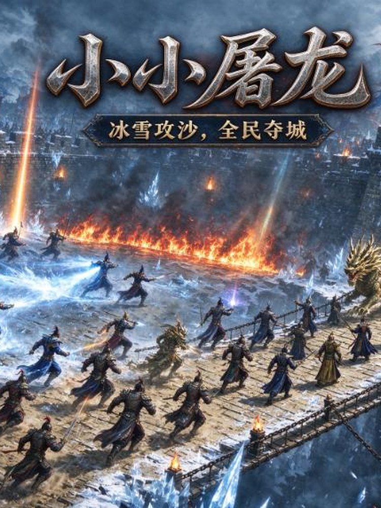
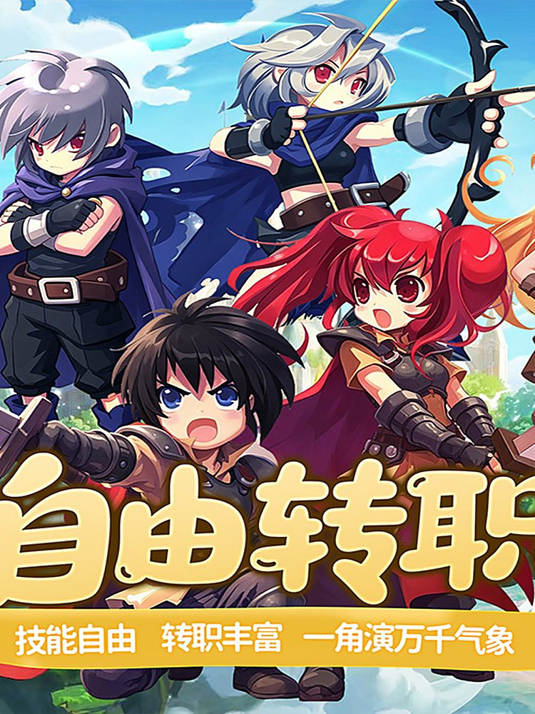
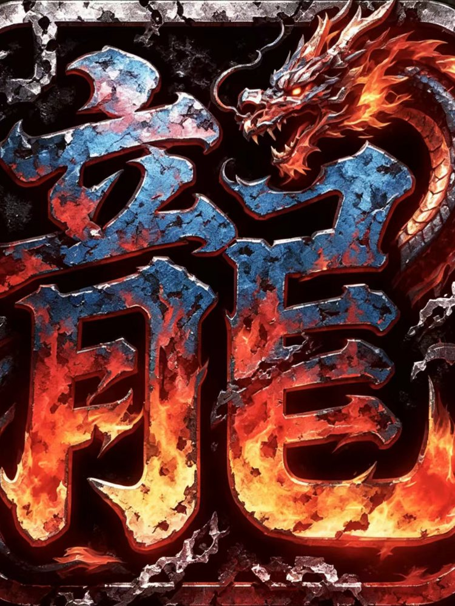
- 6款游戏
- 72篇攻略
- 7个分类
游戏
六款完全不同的节奏：贰点零江湖 看重发育与门派，小小屠龙 · 冰雪传奇 看重转生与攻沙，桃园：将帅录 看重阵容与站位，露娜2：拾光之约 看重转职与社交，传奇盛世移动版-3D点卡 看重点卡规划与打宝流通，武林外传：十年之约 看重挂机收菜与情怀剧情。

关注我 · 各平台主页
百家号 / 头条号 / 知乎 / 公众号，同名「游戏攻略总站」，新攻略第一时间发在那边。
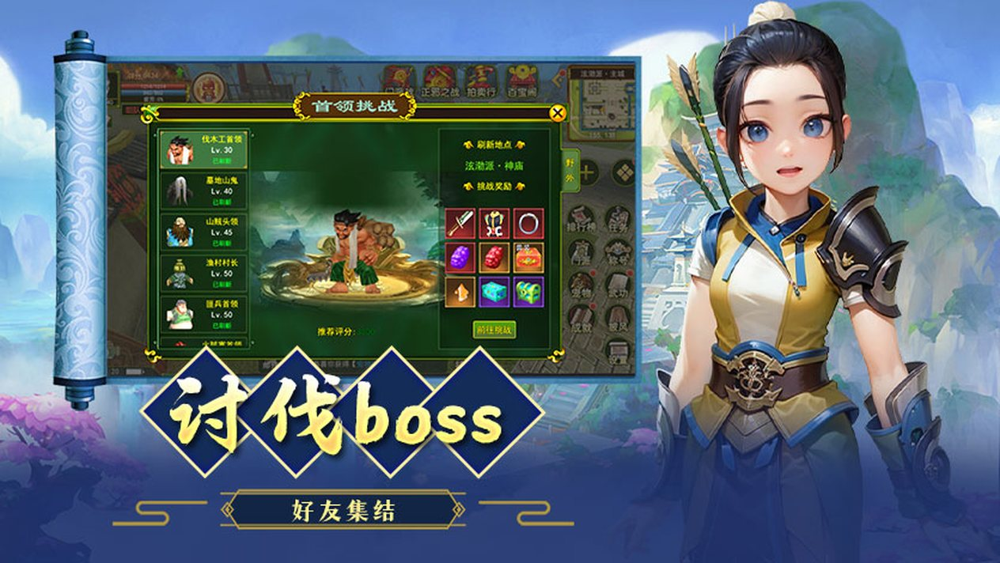
复古武侠 · 三端互通
贰点零江湖
复刻经典 2.0 版本的怀旧武侠：五大职业、正邪阵营、四层地图，安卓与 iOS、PC 三端数据互通。商城不卖战力，装备与材料靠自己打。
职业刀客 / 剑客 / 医师 / 弓手 / 枪客
地图新手村 · 野外 · 副本区 · 主城
经济摆摊无手续费，非绑定可交易
付费无首充，仅月卡类便利特权
获取游戏 · 开服咨询电脑玩手游模拟器专区
贰点零江湖 · 全部 13 篇
按阶段排的：先走出新手村，再解决职业、挂机点位、强化投入、组队分收益，最后才轮到阵营战。
游戏特色 · 官方图集
取自《贰点零江湖》官网「游戏特色」板块：讨伐 BOSS、灵宠陪伴、运气行功、经典归来与主视觉海报，原图完整展示。图片版权归原厂商所有。
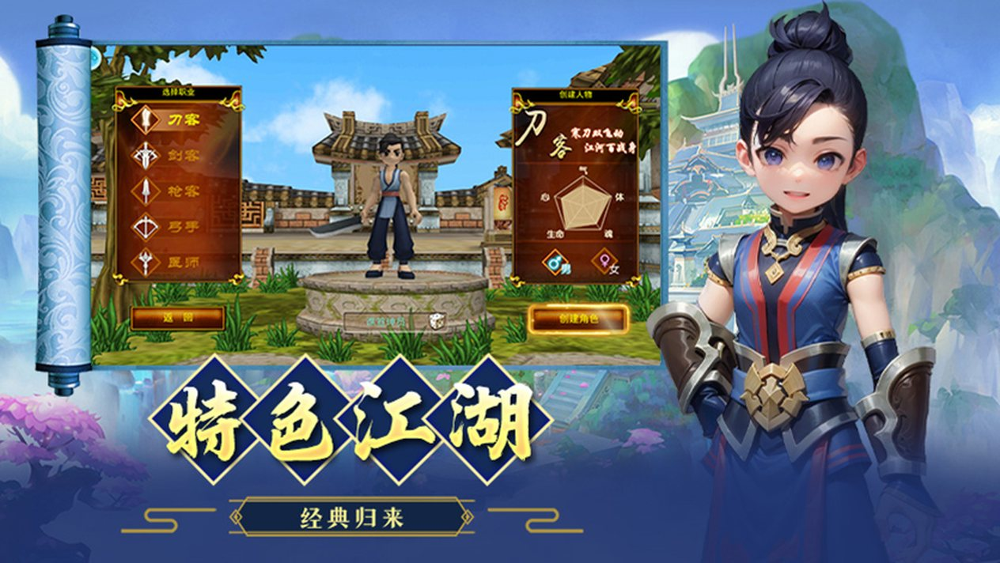
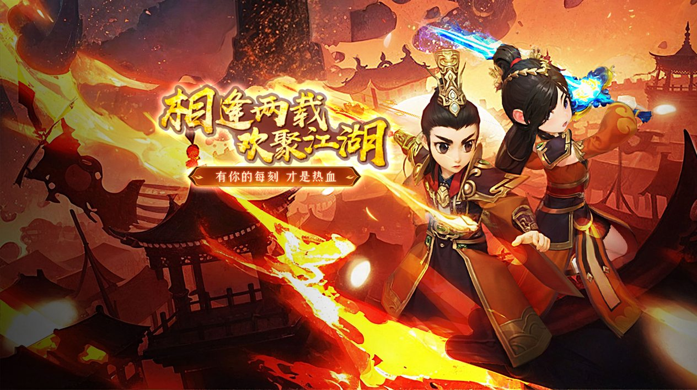
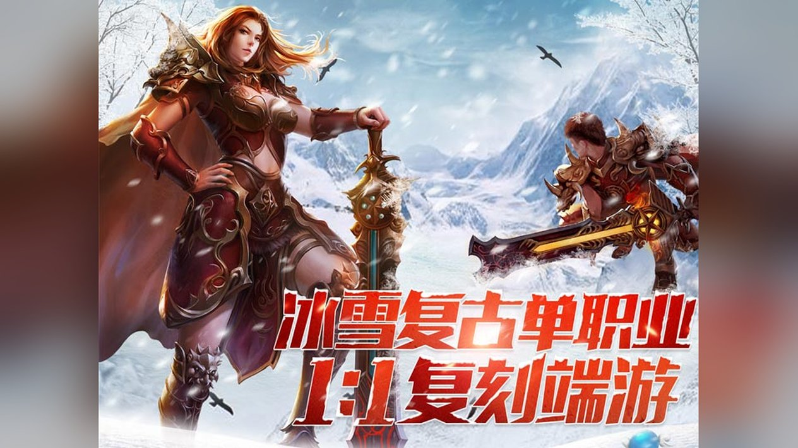
冰雪复古 · 打宝攻沙
小小屠龙 · 冰雪传奇
冰雪复古传奇：从起源冰城起步，攒够转生材料进二大陆冰雪之城。小怪概率出光柱，BOSS 定时刷新，非绑定装备可以自由摆摊交易。
起点起源冰城
进阶二大陆 · 冰雪之城
职业单职业
交易非绑定装备摆摊交易
获取游戏 · 开服咨询小小屠龙 · 冰雪传奇下载电脑玩手游模拟器专区
小小屠龙 · 冰雪传奇 · 全部 9 篇
从第一周转生，到切职业、选挂机图、出货定价，再到选行会与攻沙站位——一个散人的完整循环。
游戏特色 · 官方图集
取自《小小屠龙 · 冰雪传奇》官网「游戏特色」板块：冰雪复古单职业、技能混搭、散人打金、泡点挂机与巅峰对决，原图按 4:3 完整展示。图片版权归原厂商所有。
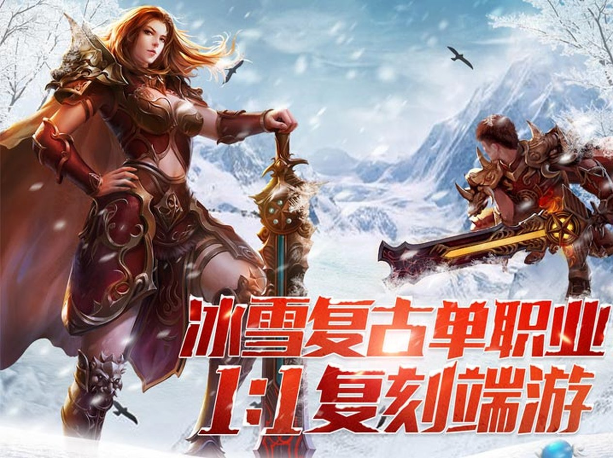
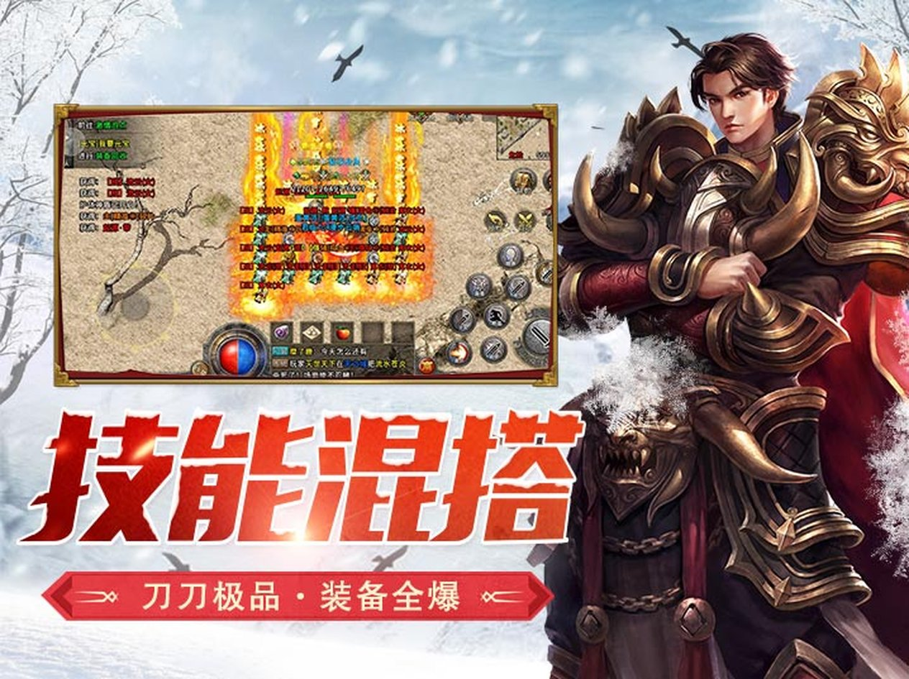
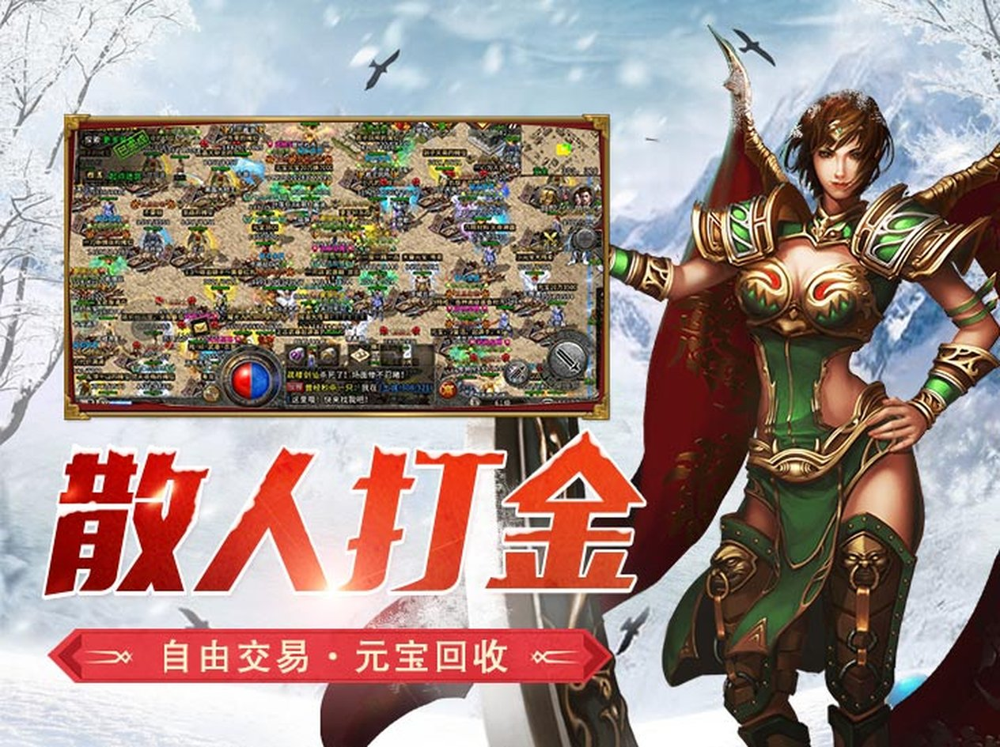
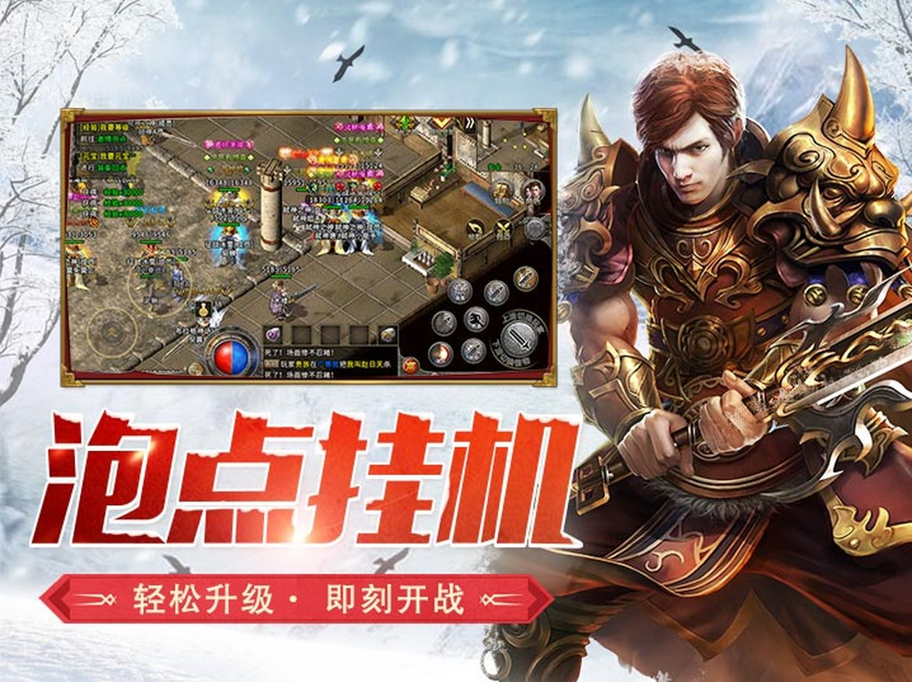
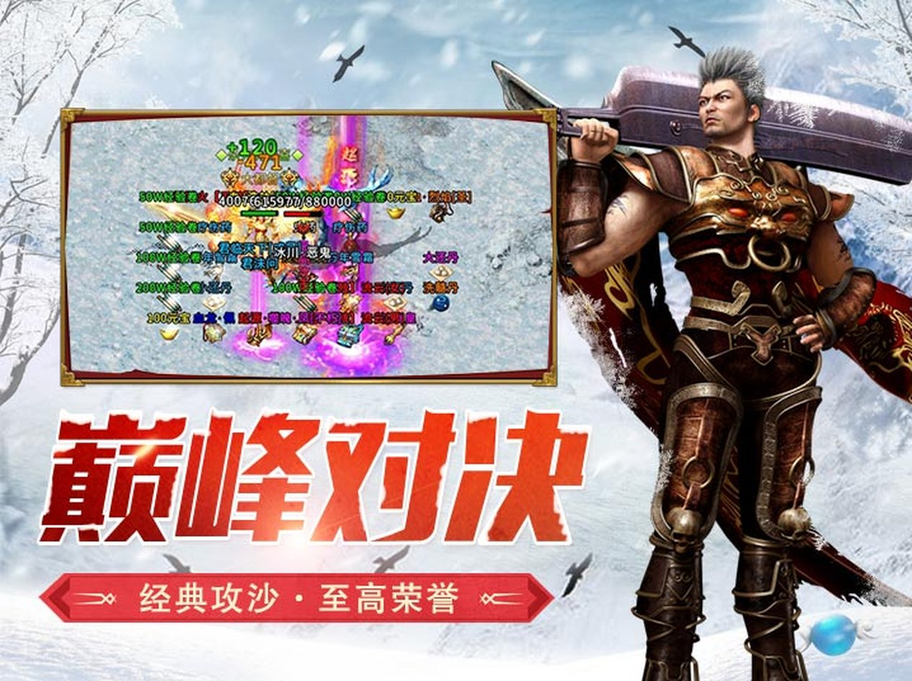

Q 版三国 · 回合策略
桃园：将帅录
Q 版 3D 幻想三国回合制：盾系、谋士、弓手、辅助、突骑、掠阵六类定位，胜负更多取决于阵容结构与站位，而不是单纯数值。三端互通。
定位盾系 / 谋士 / 弓手 / 辅助 / 突骑 / 掠阵
玩法回合制编队、推图、军团
节奏慢节奏，不靠数值碾压
平台安卓 / iOS / PC 三端互通
获取游戏 · 开服咨询苹果版下载安卓版下载电脑玩手游模拟器专区
桃园：将帅录 · 全部 17 篇
开局资源、属性加点、武将培养、阵容站位、卡关排查、战宠培育与军团战：不靠数值，靠把每一步做对。
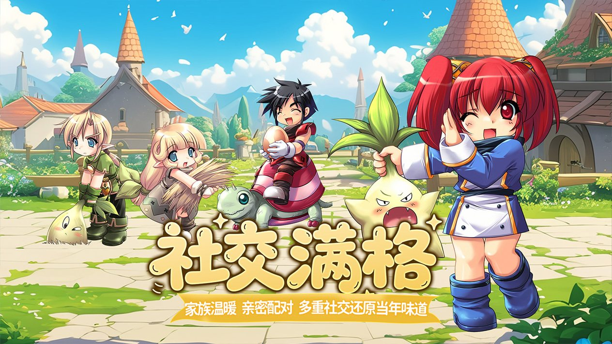
奇幻冒险 · 自由转职
露娜2：拾光之约
《露娜2》正统续作 PC 端游：自由转职、社交满格，把经典的地图与养成系统原汁原味带回来。12 月 10 日公测——开服前把魔附、摆摊、挂机与转职加点先看明白，上线直接照着做。
--天
--时
--分
--秒
平台PC 端游
公测2026.12.10 暂定 · 以官方公告为准
特色自由转职 / 社交满格 / 原汁原味
资质资质名称：露娜2
获取游戏 · 开服咨询电脑玩手游模拟器专区
露娜2：拾光之约 · 全部 4 篇
公测首批攻略聚焦四大系统：魔附养成、摆摊交易、挂机辅助、转职加点。开服后按实际版本持续更新。
《露娜2：拾光之约》为官方宣传名称，审批备案名称（资质名称）为「露娜2」。公测时间暂定 2026 年 12 月 10 日，如有调整以官方公告为准。
官方图集
官网宣传原画与实机画面：萌系画风先睹为快。图片版权归原厂商所有。
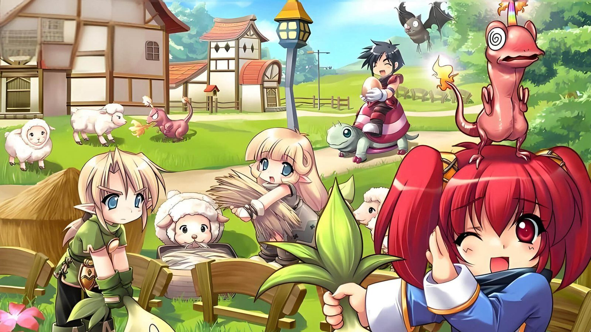
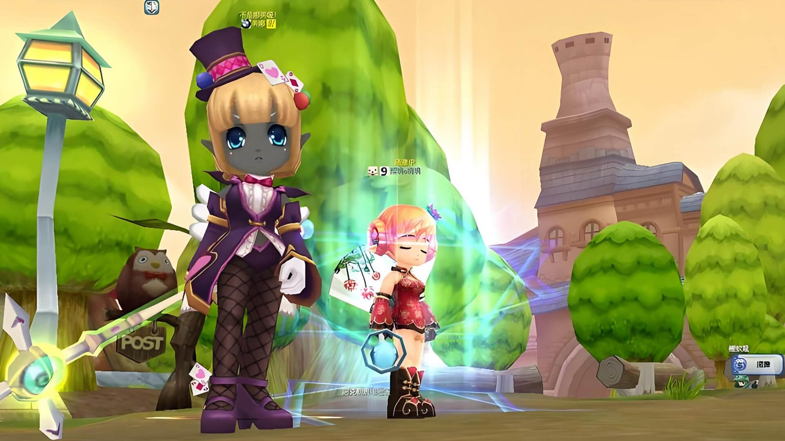
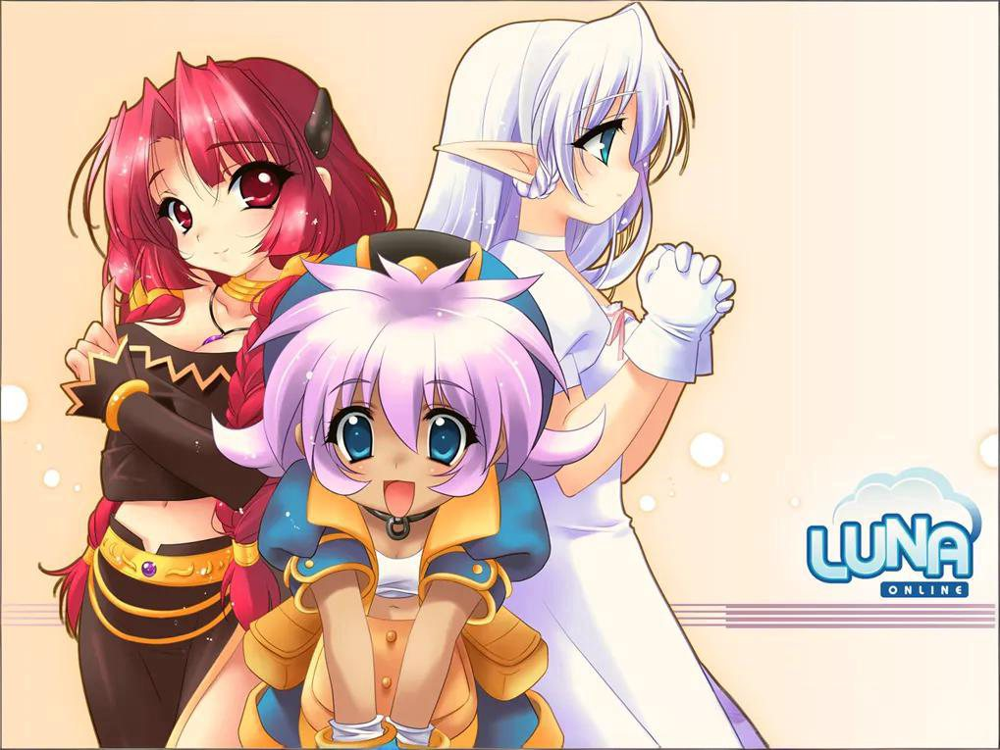
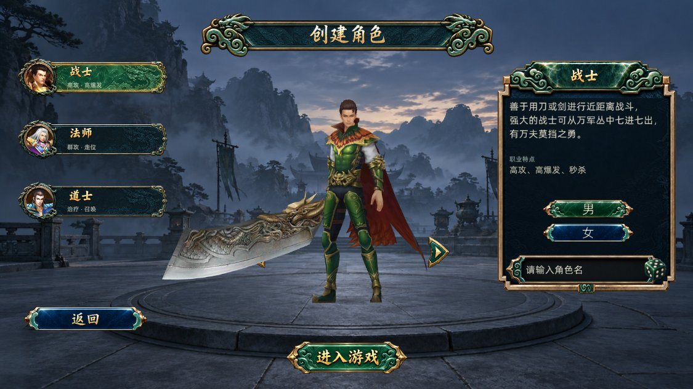
点卡计时 · 1.76 复古
传奇盛世移动版-3D点卡
《传奇盛世移动版-3D点卡》：1 元 = 10 点卡 = 60 分钟，离线同样计时——钱买的是「玩多久」而不是「有多强」。金币行由玩家定价、非绑定装备死亡掉落、掉落概率全公开，晚进服还能免费补到「世界等级 - 3」。
计费1 元 = 10 点卡 = 60 分钟 · 离线计入
职业战士 / 法师 / 道士
交易金币行玩家定价 · 收币方 5% 金币税
获取游戏 · 开服咨询传奇盛世移动版-3D点卡下载电脑玩手游模拟器专区
传奇盛世移动版-3D点卡 · 全部 6 篇
点卡计费与成本账、金币行交易门槛、装备掉落与材料用途、战法道分工、新手开荒六步、等级补领。开区与版本更新后按实际内容持续补充。
《传奇盛世移动版-3D点卡》为安徽游昕网络官方运营的正版移动网络游戏，计费与交易规则以游戏内公示为准；本站攻略基于官网公开资料整理。
游戏特色
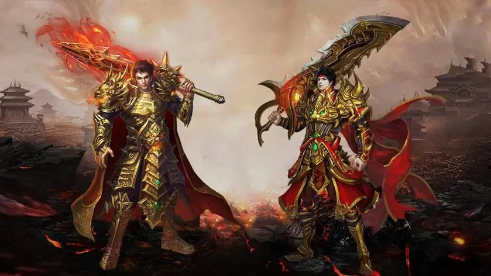


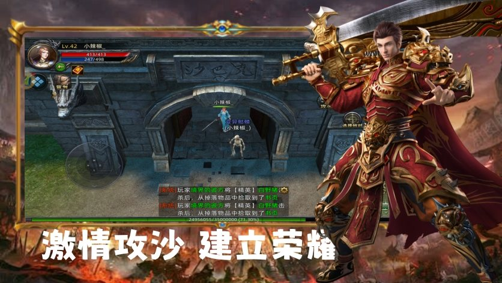


同福客栈 · 武林情怀
武林外传：十年之约
十年之约，重回七侠镇。正版授权情景喜剧武侠手游：与佟湘玉、白展堂、郭芙蓉并肩闯江湖，还原「葵花点穴手」「排山倒海」等经典招式，轻松挂机、兄弟组队、海量福利——江湖未远，热茶温酒，等你赴约。
题材正版授权 · 武林外传 IP
玩法轻松挂机 · 组队 · 副本挑战
还原葵花点穴手 · 排山倒海
获取iOS / 安卓 双端直装
获取游戏 · 开服咨询武林外传：十年之约下载电脑玩手游模拟器专区
武林外传：十年之约 · 全部 18 篇
站内图文攻略陆续整理中。先看下面从官网精选的官方攻略，开荒不迷路。
官方攻略精选 · 18 篇
从《武林外传十年之约》官方官网精选的攻略文章，点击跳转原文阅读；站内图文版会陆续整理替换上来。
武01账号注册游戏安装、苹果华为安装游戏及电脑端玩教程攻略安装与注册一步到位，苹果/华为/电脑端全平台说明。来源：武林外传十年之约官网 · 点击跳转原文武02每张图该干啥？七侠镇到南疆全阶段攻略挂机不迷茫：每张地图该做的日常与收益点全梳理。来源：武林外传十年之约官网 · 点击跳转原文武03枪豪拉怪医师奶！副本黄金阵容+逃课技巧副本黄金阵容怎么组，拉怪与奶妈的配合，逃课点位一次讲透。来源：武林外传十年之约官网 · 点击跳转原文武04传说装备掉率5%别错过！烙印之塔全攻略传说装备主要产地，掉率机制与刷塔路线。来源：武林外传十年之约官网 · 点击跳转原文武05葵花点穴手预备！BOSS 副本通关秘籍BOSS 机制逐个拆解，出招前摇与打断时机。来源：武林外传十年之约官网 · 点击跳转原文武06隐藏挑战副本有哪些隐藏副本的触发条件与奖励一览。来源：武林外传十年之约官网 · 点击跳转原文武07别拿木剑砍山贼啦！武器获取路子全在这各品质武器的获取途径与过渡取舍。来源：武林外传十年之约官网 · 点击跳转原文武08别再拿装备给白展堂交学费了！精炼进阶材料全点名精炼与进阶所需材料来源全汇总，别把强化石点歪。来源：武林外传十年之约官网 · 点击跳转原文武09散人职业装备全解析，从新手到毕业散人全职业装备路线图，少走弯路不踩坑。来源：武林外传十年之约官网 · 点击跳转原文武10枪客装备也太难选了吧？全解析来了枪客词条与套装选择优先级。来源：武林外传十年之约官网 · 点击跳转原文武11三转全攻略：别卡在 60 级当萌新啦三转任务流程与前置条件，60 级转职不卡壳。来源：武林外传十年之约官网 · 点击跳转原文武12升级丹大全：来源、数量、效率一文汇总升级丹全部获取渠道与使用优先级。来源：武林外传十年之约官网 · 点击跳转原文武13精力丹全攻略｜用对这颗小丸子，升级速度直接翻倍精力丹的使用时机与每日规划。来源：武林外传十年之约官网 · 点击跳转原文武14魂晶如何获得魂晶的获取途径与消费建议。来源：武林外传十年之约官网 · 点击跳转原文武15玩转悬赏任务！从接取到刷取，完整实战教学悬赏任务的刷新规律与高效刷法。来源：武林外传十年之约官网 · 点击跳转原文武16跑环任务怎么做？速通与奖励指南跑环路线优化，速度与奖励兼得。来源：武林外传十年之约官网 · 点击跳转原文武17嘿！客官里面请！侠客系统大揭秘侠客招募、升星与羁绊机制讲解。来源：武林外传十年之约官网 · 点击跳转原文武18圣武系统介绍圣武系统的开启条件与养成收益。来源：武林外传十年之约官网 · 点击跳转原文
游戏特色 · 官方图集
取自《武林外传十年之约》官方官网宣传图：正版授权海报与游戏实机截图，原图完整展示。图片版权归原厂商所有。

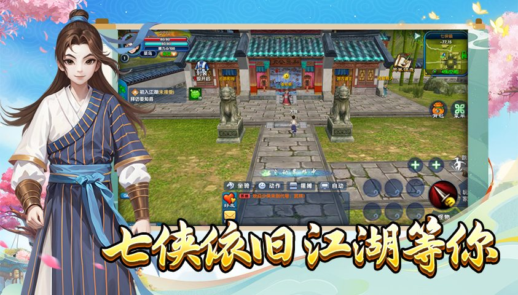
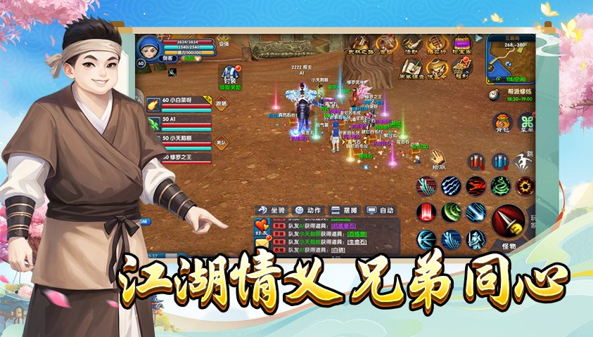
游戏下载
六款游戏下载与获取入口，点击直达

游戏客服： 各游戏开服信息、下载问题都可咨询
🖥️ 电脑玩手游 · 模拟器专区
手机游戏装进电脑：任选一款模拟器，装完能玩的游戏完全一样


- 装好模拟器，打开后进入安卓桌面（第一次启动会慢一点，等它初始化完成）。
- 在模拟器里打开自带浏览器，访问本站 wgame-bc7.pages.dev；或直接在电脑浏览器下载安装包，拖进模拟器窗口。
- 回到上面「游戏下载」列表点下载，安装包会自动装进模拟器，装完桌面就能看到游戏图标。
小提示：游戏提示「不兼容」或闪退，先在模拟器设置里把安卓版本调到 9 或更高、内存给到 4G 以上再试；打金类游戏建议关掉模拟器的省电模式，避免后台被杀。露娜2：拾光之约是 PC 端游，无需模拟器，直接进分站下载客户端。